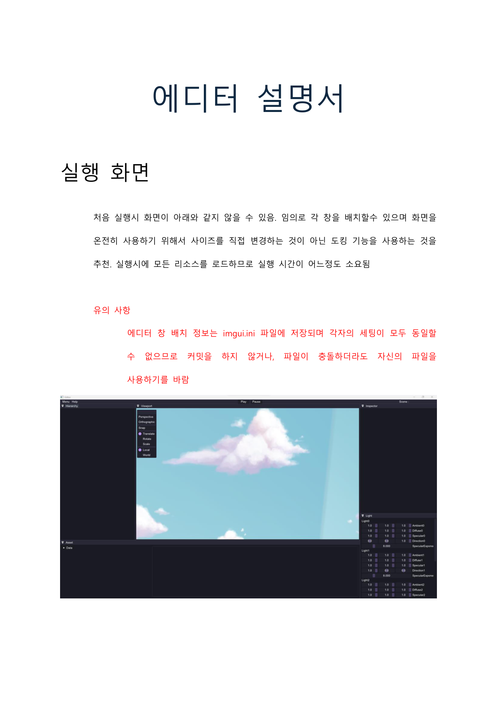
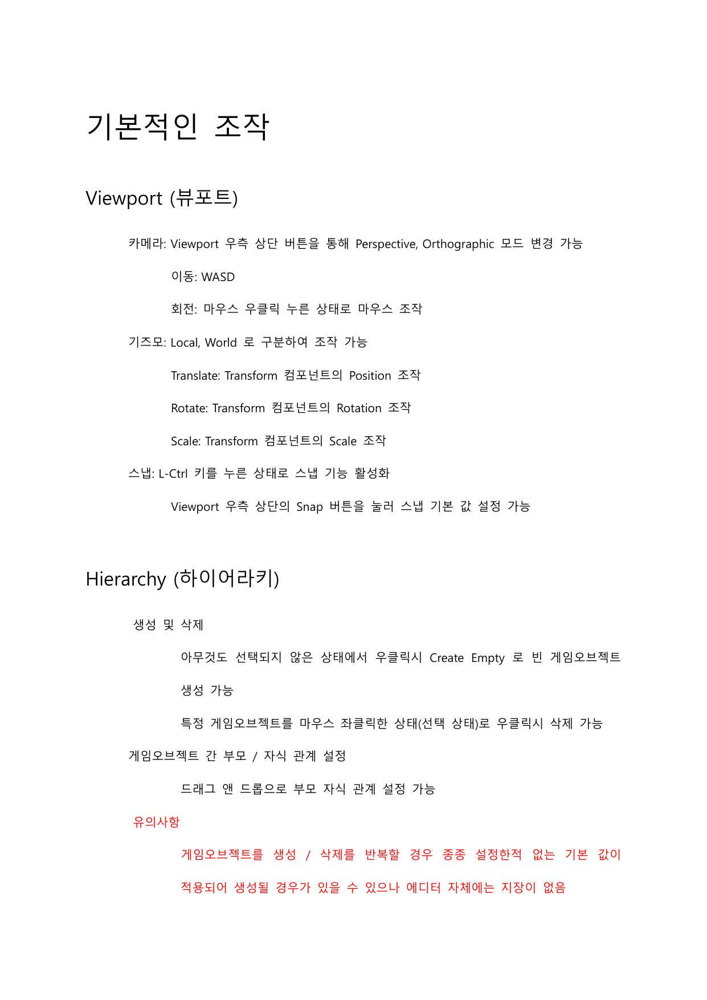
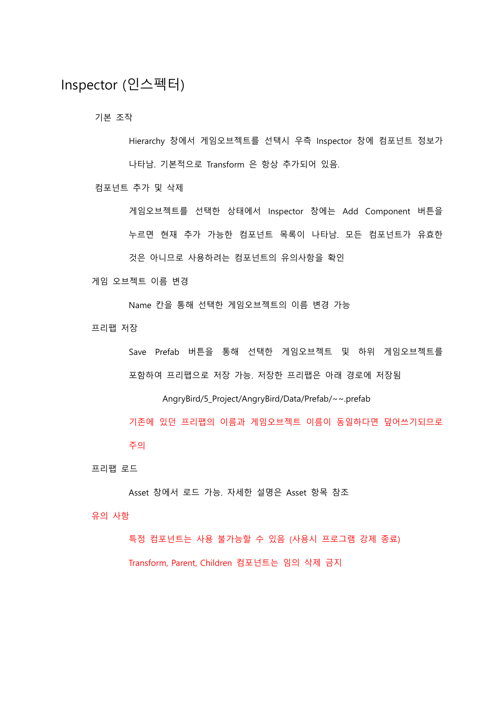
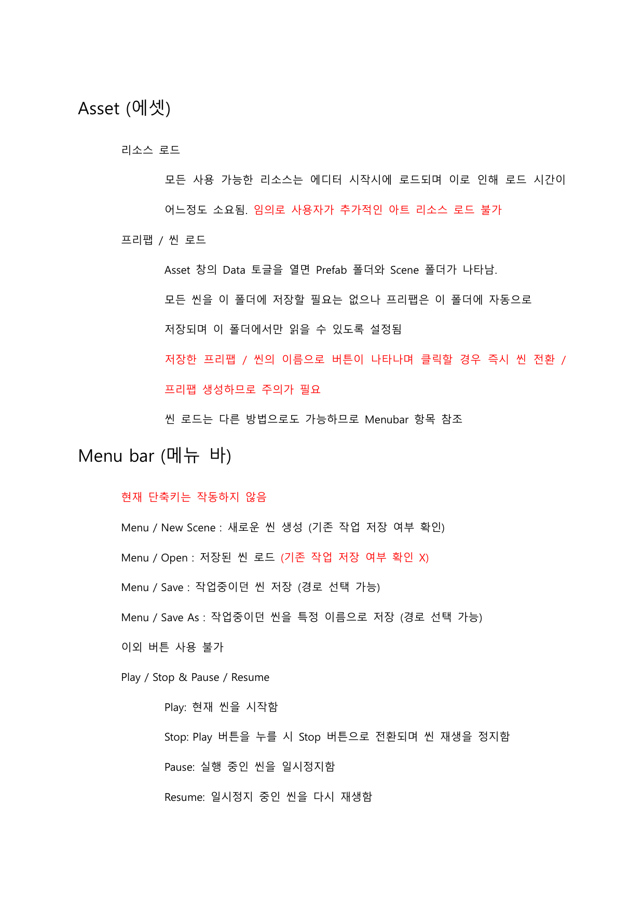
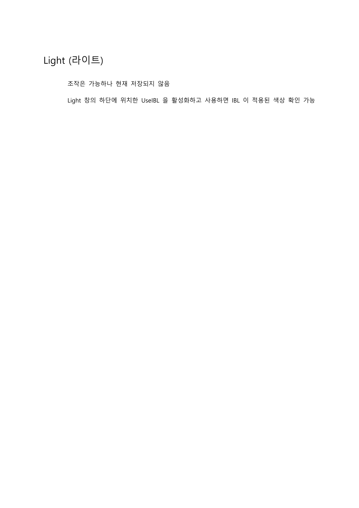
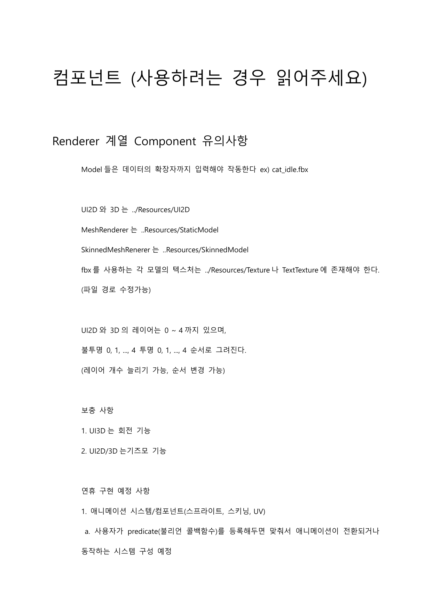
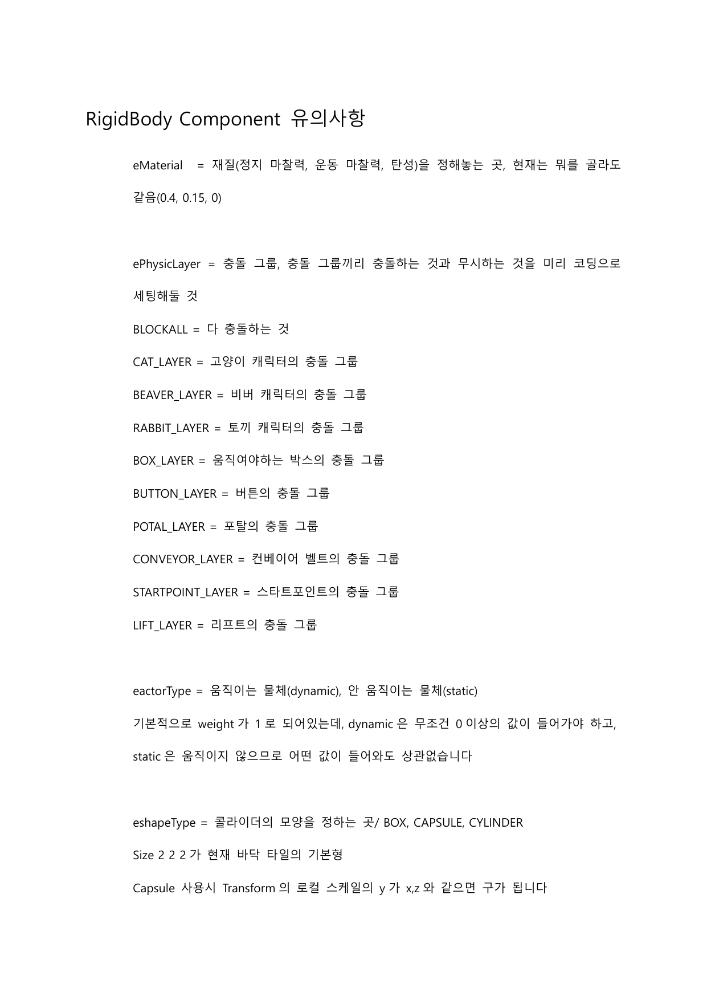
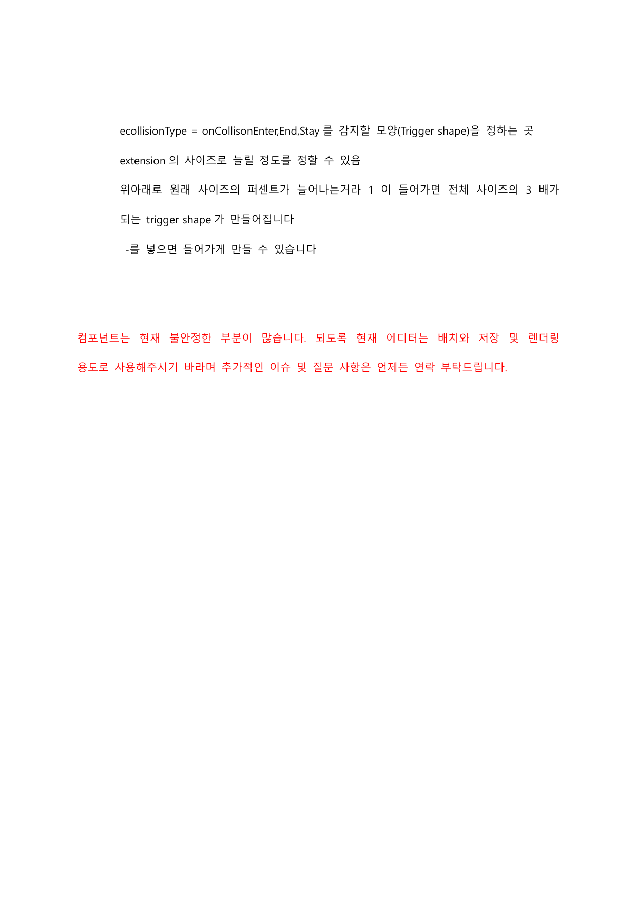

TICTOC GUARDIANS · 2024
에디터 설명서
자체 엔진의 에디터를 기획과 아트가 직접 쓸 수 있도록 쓴 문서입니다. 화면마다 예시 캡처를 붙이고, 잘못 건드리면 문제가 생기는 부분은 빨간 글씨로 따로 적어 뒀습니다.
01 · 02실행 화면 · 기본 조작
03 · 04인스펙터 · 에셋
05라이트
06 – 08컴포넌트 유의사항
전문 — 8쪽

01 · 실행 화면

02 · 기본적인 조작 — 뷰포트 · 하이어라키

03 · 인스펙터 — 컴포넌트 추가 · 프리팹 저장

04 · 에셋 — 리소스 · 프리팹 · 씬 로드

05 · 라이트 — IBL

06 · 렌더러 계열 컴포넌트 유의사항

07 · 리지드바디 — 충돌 그룹 · 재질

08 · 트리거 셰이프 · 맺음말